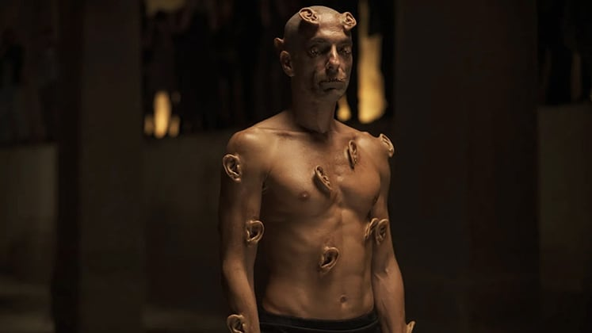
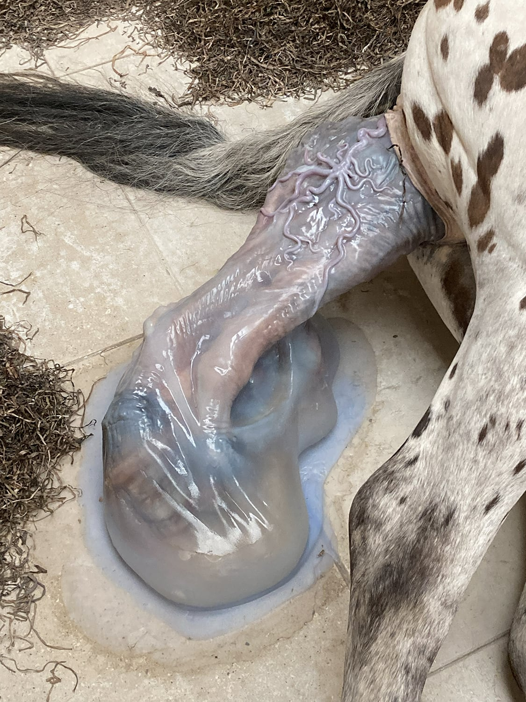

This thesis is made by Julia Olijkan
Bachelor Graphic Design 4th year
Royal Academy of Art, The Hague
©
Supervised by
Füsun Türetken
The body, as a site of both constraint and liberation, is a medium for the exploration of human potential. With goals of evolving desire, there is a push towards the boundaries of what it means to be human, entire. My fascination with body modification derives from the body as a resource for a new being, showing the body as a landscape of the reflection of autonomy. In the extreme forms of body modification, there is an advancement of a new form of human expression and evolution, in line with the post-humanism paradigm.
As we explore the motives behind the extreme forms of altering the body, in reality and art, we see that the practices in present Western culture are signals for a society in transition, one that stands for a redefinition of human, animal, and machine. From anthropocentric thinking, we see that the position of human over animal should no longer be the current starting point, as this relationship is shifting. The boundaries that determine what a person or animal is, are becoming blurred. The accelerated developments in technology and informatics are visible in the changing human.
On the basis of two icons, each in their own way involved in changing their body in an extreme fashion, and a number of striking examples from art, I’ll show how these are manifestations of a world and human in transition.
My fascination with body modification derives from the thought of our body as a resource for a new being, showing our body as a landscape of the reflection of autonomy. Essentially, our body is a landscape that can be shaped and sculpted by the forces of nature, culture, and techne. Natural reproduction, environmental adaptation and technical implants blend to new forms of bodies.
Moreover, my interest in this domain extends to the conscious choices that individuals make to further express their physical selves. I am intrigued by the degree to which the human body can be transformed through the use of implants. The phenomenon of extreme body modification can take the form of recognizable animal traits or implants such as sensors and chips. They can enhance human sensory capabilities and expand the body’s capacities with ‘superhuman’ skills, posing intriguing questions about the meaning of such changes.
This thesis does not delve into the realm of surgical interventions for medicinal purposes, such as the treatment of burns, performing exigent amputations, implanting prosthetic hips or knees, or implanting life-sustaining cardiac devices. Nor does it concern itself with the art of cosmetic surgery, which is often sought after to meet societal standards of beauty, as epitomized by the likes of the Kardashian family.Abbey Rose Maloney (Maloney, 2017) writes about the body-positive movement and sex-positive movement that beauty icons like Kim Kardashian and Kylie Jenner have unleashed. She concludes that the Kardashian-Jenners “partially encourage the fourth-wave feminist notions of body-positivity and sex-positivity in their target audience, and they have made their target audience trans-aware, and transaccepting” (Maloney, 2017, p. 58). And: “The modern body-positive movement does not shame women who change their bodies in unnatural ways because it makes them feel more confident, and because they want to do so” (Ibid., p. 58).
Body modification is the practice of altering one’s physical appearance through various means, such as tattoos, piercings, scarification, branding, amputation and cosmetic surgery. It is a phenomenon that has been practiced throughout human history, with the earliest evidence dating back to the Neolithic period in the form of Ötzi the Iceman, a well-preserved mummy from 3300 BCE with various tattoos on his skin.
Ötzi, also known as the Iceman, is a well-preserved mummy of a man who lived around 3300 BCE, and one of the most intriguing features of his remains are the tattoos on his skin. These tattoos, consisting of small parallel lines arranged in geometric patterns, have been the subject of much research, with theories suggesting they could have had therapeutic or medicinal purposes, religious or spiritual significance, or as a form of personal expression or social identification. The discovery of tattoos on Ötzi’s body provides valuable insight into the culture and practices of Copper Age people, and further research on the tattoos is expected to reveal new insights into their meaning and significance in ancient society (Deter-Wolf et al., 2016).This case – although one of many – shows that body modification is an age-old phenomenon.
Different cultures have their own unique forms of body modification, often with specific meanings and symbolic significance. In ancient Egypt, for example, both men and women would tattoo themselves with religious symbols as a form of spiritual protection. In Polynesia, traditional tattoos, or ‘tatau’ (the origin of the word ‘tattoo’), were used to mark a person’s status and achievements within the community (Robinson, 2010). And in many cultures (African, South-American, Oceanic) finger amputation and other forms of self-mutilation were practiced, mostly as a demonstration of mourning (Siegeltuch, 2018).
Scarification was, and is, used in various indigenous cultures as a rite of passage or to mark important events in a person’s life. In West Africa, for example, the Ashanti people use scarification as a way to mark their status in the community and as a form of spiritual protection. In other cultures, body modification is also associated with ritual or spiritual practices. For instance, in Hinduism and Buddhism, the piercing of the ears is believed to release the energy of the body (Gold, 1996), while in some African cultures, scarification is believed to be a way to communicate with the spirits (Cullivan, 1998; Garve et al., 2017).
Importantly, all these cultural phenomena are traditions or habits within relatively closed cultural communities. In contemporary Western culture, however, body modification is often seen as a form of self-expression, as an expression of individual identity (Weiler et al., 2021).
Weiler et al. (2021) have investigated the ‘need for uniqueness’ factor as possible motive for modifying one’s body. They found that pierced and extreme-body-modified individuals tend to “display a propensity to actively flout rules and not worry about others’ opinions on their modifications”. This does apply in a lesser extent to tattooed persons.Piercing and tattooing are popular and ‘light’ forms of body modification, but in this thesis I will particularly examine the extreme cases.
Another form of body modifying with subdermal implants is through tech implants; this is also known as biohacking (or: grindhouse technology) and represents the human cyborg.
Cyborg is a portmanteau of ‘cybernetic’ and ‘organism’ and stands for the physical fusion of humans and machines. Cyborgs first appeared in science fiction, but the term is also used for people who are kept alive for medical reasons through the use of artificial implants, equipment, or attachments. Haraway (1991) offers a broader definition, in which she includes people who wear glasses and those who rely on their mobile phones as cyborgs.
This form of body modification involves the integration of technological devices into the human body for various purposes, such as enhancing physical abilities, accessing information or augmenting sensory experience. Examples of implantable devices are chips, sensors, electrodes, or wearable technology such as exosuits or cybernetic prosthetics.
One example of a person that is well known for his cyborg performance art is Manel De Aguas, born in 1996 (Zas, 2019; Lügger, 2019). In contrast to Avner, De Aguas is a performance artist. He is equipped with ‘weather fins’, special devices on either side of his head that allow him to perceive changes in atmospheric pressure, humidity, and temperature. With these fins, he has the ability to predict changes in the weather and sense his altitude based on the sensations he feels. With his technology, De Aguas achieves a unique level of sensory perception. By blending the organic and non-organic, the line between man and machine gets blurred. Over time, De Aguas has tested several prototypes, but it cannot be deduced from the available information (Zas, 2019; Lügger, 2019) whether he has actually had the devices implanted.
As earlier mentioned, transdermal implants have been associated with cyborgs. If it comes down to deciding whether one of the above cases can be defined as real cyborgs, we need to be careful. According to generally accepted definitions, a cyborg is a creature in science fiction that is part human and part machine. Haraway, however, author of A Cyborg Manifesto,
In 1985 Donna Haraway became world famous. In that year she published her first edition of A Cyborg Manifesto, an in-depth study of the relationship between man and machine. In A Cyborg Manifesto, Donna Haraway unites radical engagement, critical feminism, disturbing ideas and an understanding of modern technology studies. In her essay, Haraway demonstrates that all sorts of old dichotomies have become obsolete and she proposes a new political perspective. She uses the cyborg for this purpose, a cross between man and machine. Her manifest is a modern classic that is still in line with current events.extends this definition to: “A cyborg is a cybernetic organism, a hybrid of machine and organism, a creature of social reality as well as a creature of fiction” (Haraway, 1991, p. 150). What she adds, from a feminist-socialist point of view, is the element ‘creature of social reality’. She regards the “boundary between science fiction and social reality” as an “optical illusion” (Ibid.). And she continues: “By the late twentieth century, our time, a mythic time, we are all chimeras, theorized and fabricated hybrids of machine and organism; in short, we are cyborgs” (Haraway, 1991, p. 151).
Neither Avner nor De Aguas are fictional characters, so in that respect they don’t comply with the general definition. However, De Aguas fits the definition the best, as he has a technical device built into his body and therefore can be called part human, part machine. Avner, then, would be a borderline case in my opinion. He does have a technical extension in the form of a tail (Pemberton, 2003), but the tail misses a function, like De Aguas’ ear device. In Haraway’s definition, however, both Avner and De Aguas can be called cyborgs, as everyone is a cyborg.
A lot has been written and documented in films about body modification and body modifiers in modern times. Many manifestations can be seen, and we can distinguish different underlying motives. However, there is one thing that most of these manifestations have in common: the modifiers want to deviate from the norm, deviate from what is considered as ‘normal’, i.e., the average idea of what we should look like. An exception should be made for the examples of body modification that we see among indigenous cultures. In these cultures, modification functions (or functioned) as a norm, or a way to express a certain position within their hierarchical system (see Part 1).
‘The norm’ in the outward appearance of humans is not an easy concept. When we talk about ‘the norm’, we probably mean the average idea of what a human looks like, or rather the idea an average human looks like. Are we then thinking of beauty ideals, which are connotated with attractiveness? Can you equate beauty ideals with ‘the norm’? Beauty ideals are often ‘extremes’ as well. And there is not always consensus about these ‘ideals’, as they may be culturally determined and may fluctuate from time to time.
There is extensive literature on the phenomenon ‘beauty ideal’. What strikes most, is that beauty ideals are mostly associated with women, and that a common core is that women must be thin. Brown & Slaughter (2011, p. 119) found that “the thin ideal is already present in primary school children and remains stable into adulthood, with concerning implications for body dissatisfaction and related disorders.”
Beauty ideals may differ from culture to culture and are no absolute concepts. To whoever it may concern, they act as a sort of guidelines, as targets, but in themselves they often form extremes. Beauty ideals can lead to ‘conversion’ – making people look alike, with the help from the cosmetic surgeon’s industry (Briscoe, 2004)
It must be noted that Briscoe, in her very readable report, relies heavily on Virginia Blum’s Flesh Wounds: The Culture Of Cosmetic Surgery (Blum, 2005).The word ‘ideal’ says it already: an ideal simply is not the norm.
Pitts (1999)Victoria L. Pitts is a sociologist and professor at San Francisco State University. She has produced several publications on body modification and subculture, including the thesis Body Strategies: Signifying the Body in Subculture (1999).
She studies how subcultures use the body to communicate identity and meaning, analyzing how groups like punk, goth, and hip-hop modify their bodies to express specific norms and values, rebelling against the dominant culture and creating their own identity.sees the ‘normal body’ as a product of cultural investment and social control. She sees body modification as a realm of personal expression, as a ‘bearer identity’. In her research, she discusses the ways in which people use body modification to express their identity and differentiate themselves from mainstream culture. She views body modification as a strategy people use to “claim and define who they are”. She sees the body as a place of social struggle and discontent, creativity and identity politics. The body is denaturalized by body modifiers in ways that challenge disciplinary social control over the body and normative ethnicity.
Additionally, Pitts (1999) sees body modification as a political act and expression because it allows people to “claim and define who they are” and thus take power and control over their own bodies and identities. By modifying themselves, they can challenge not only mainstream culture, but also the political power structures that this culture is part of. In this way, the scholar argues that body modification is an important political tool that can help people claim their own identity and power and challenge existing power structures. Ultimately, Pitts does not view body modification as a disease or problematic behavior, but rather as a way in which people exercise power and control over their own bodies and identities.
Body modification is a phenomenon that can often be traced back to performance art. It can be a reflection of the artist’s desire to explore and challenge societal norms and conventions related to the human body. By using the body as a medium, the artist is able to connect with their audience on a deeper level.
A pioneer in using the body as a medium is Marina Abramović. Abramović is known for her physically and emotionally challenging performances, in which she explores the limits of the self and the body. In her work Rhythm 0 from 1974 (Artfilemagazine, 2022) Abramović stood still for six hours while members of the audience were invited to use objects such as rose petals, feathers, honey, and knives on her body. This piece was meant to challenge notions of power dynamics and the relationship between performer and the audience. Through the use of her own body and transformation she underwent during the performance, Abramović aimed to question the boundaries of the self and the limit of human endurance.
In several art performances, Abramović collaborated with her former partner Ulay (1943-2020). All these performances involved the use of their bodies. In Imponderabilia (1977) the artists stood naked, facing each other closely at the entrance of an art gallery, forcing visitors to choose who of the two they would face when passing. By using their bodies as a barrier, Abramović and Ulay sought to confront viewers with their own physicality and sense of personal space.
In similar fashion, the concept of the film Crimes of the Future (2022), showed the relationship between the performance artists Caprice and Saul, that likely recalled the duo Abramović and Ulay. In a review in Artnews (Greenberger, 2022) the same connotations are mentioned. This film poses a relevant and innovative view on how to deal with our body and scenarios of the future within the thought of the body as a medium. Several subjects are touched upon in the film, such as the exploration of identity; where in one scene there is a conversation about the search for plastic surgeons who want to perform procedures that do not implement and pursue the normative ideal of beauty. Moreover, the film’s surreal, dystopian setting highlights the potential consequences of a world dominated by technology and consumerism. The film delves into the intriguing concept of neo-organs, an innovative approach to enhancing the human body through the creation of improved body parts. This raises thought-provoking discussions regarding the ethics surrounding the procurement of donor organs, pushing beyond the confines of contemporary debates (Greenberger, 2022).
The central concept of the film is the idea that external beauty is a reflection of inner beauty, and that the notion of ‘beauty’ extends beyond mere physical appearance to encompass self-improvement and self-expression. The notion of adorning newly-made organs, not just through transplantation but through the art of tattooing, is a groundbreaking and novel concept explored in the film. This practice is referred to as ‘tattooing of novel organs’, which shows a unique perspective on the boundaries of human potential.
Another performance artist who makes use of his body and goes very far in this, is ‘The Ear Man’, an artist that can be associated with the science fiction movie Crimes of the Future, and who is also mentioned in Greenberger’s article (Greenberger, 2022). The Ear Man is an artist who has sewn his eyes and lips, and adorned his body with many extra ears, which he shows in a provocative and disturbing manner.
This performance appears to be an allusion to the work of Australian artist Stelarc, who, in 2007, had a cell-cultivated third ear surgically attached to his left arm. The work was a reflection of the rapidly shifting digital landscape and the ways in which bodies and identities are adapting in response. Stelarc himself has stated that the ear represents not a lack, but an excess of connectivity, as our interfaces become more important than our physical bodies.
Despite its reference to Stelarc’s work, the film seems to approach The Ear Man’s performance with a measure of skepticism. A businesswoman in the film dismisses The Ear Man’s act as poor conceptual art and remarks that he is a better dancer than artist. Through the character of The Ear Man, the film invites us to consider the implications of our rapidly evolving relationship with technology, and the boundaries we are willing to push in our pursuit of self-expression and connection.

Cronenberg wrote the script of Crimes of the Future around 20 years ago, when he already thought of various approaches to deal with the world’s plastic problem. In an interview (Q with Tom Power, 2022) Cronenberg talks about Crimes of the Future as “it’s the evolution of the body and the eating of plastic”. He points out that microplastic has been found in the bloodstream of many people, and it is estimated that it can be found in the bodies of eighty percent of today’s global population. According to Cronenberg the human body seems to tolerate these amounts of microplastics unexpectedly well. This element has been translated in the film through the concept of eating specially processed candy bars of toxic waste.In the interview, Cronenberg states: “I propose that the solution to the way we are destroying the earth, partly with plastics, is not to stop the production of plastics, nor is it to say we should clean the earth and the ocean. Rather, we should clean everybody’s bodies of microplastics. Stopping the production of plastics is not very likely. The alternative solution is that we should eat plastics (Q with Tom Power, 2022).” In support of this idea, Cronenberg argues that biologists and scientists have found that there are bacteria that use plastics as a nutrient. And, since both bacteria and humans are made up of single cells, there’s a chance that humans could also process plastics and use them as a nutrient. In Cronenberg’s eyes, this could potentially solve some of the world’s problems related to plastic waste.To me, Cronenberg’s line of thinking seems rather provocative and probably unrealistic. However, nobody knows if our body can’t adjust itself to the mentioned circumstances, so I think it is worth a closer look.
Cronenberg’s take on inner and outer beauty and introducing a new concept of ‘tattooing novel organs’ is something that is closer than we think. Because of the rapid development of technology and possibilities in our body-altering culture, some people are already tattooing the inside of our mouth and eyeballs. Likewise, there is the more philosophical thought of how to treat our inside as our outside and the experimentation that comes with it. This goes hand in hand with the creation of new improved body parts and organs that shows a breakdown of ‘the system’. Ultimately, the manifestations of new body parts have to deal with the social discussion today about donor organs and even the transplantation of animal organs into the human body.In an article in Science Megan Sykes (Sykes, 2022) writes about recent and hopeful developments regarding pig-to-human organ transplants in connection with the present human transplant organ shortage.
According to Haraway (1991), it is time for a new political perspective, which she explains by means of the concept ‘cyborg’, a fusion between man and machine. By this she does not only imply the traditional sense of the cyborg (e.g., bionic man or robots). She claims: all humans are cyborgs. Accessories such as a walker, glasses and mobile phone are part of our appearance and functioning. Some devices are implanted under the skin. Internally, pieces of the skeleton are replaced by plastic, devices are placed to support organs, and it is possible to modify our body with silicone. Drugs and antidepressants affect our emotional state, and we can compensate our lack of vitamins due to fast food meals with supplements. We become a mix of organic and artificial parts. The distinction between organic and technical, human, and machine, is becoming more and more diffuse.
Coming back to ‘Stalking cat’, who is in transition to animal, ‘Weather fins’, who is equipped with superhuman skills, humans that feed on plastic, the digital body that balances between masculine and feminine, it could be argued that they are all illustrations of crossing boundaries between once established, but no longer appropriate categories of human, animal, objects in society. Do the boundary crossers blur the crossed boundaries, and do the categories merge in different hybrid forms into new entities and identities? Perhaps we can speak of breaking identities and recycling new entities. People becoming more animalistic, people becoming more cyborgs and transcending themselves, robots becoming more human… Are they the predictors of a new era, a new human, a new world?
When biotechnology and information technology merge completely, the current human being, according to Harari (2017),Yuval Noah Harari is an Israeli historian and futurologist, best known for his three books Sapiens, Homo deus and 21 Lessons for the 21st Century. His central message in Homo Deus (Harari, 2017) is that man can be overtaken by his own creations. In his book Lessons for the 21st Century (Harari, 2018) he predicts possible reactions of groups of people. There will be a group that cannot go along with the prevailing technology, another group (the transhumanists) will increasingly benefit from the technological possibilities and progress. This can lead to great inequality in society.will be made obsolete. What are people when the mind is completely taken over by artificial intelligence and when work is replaced by play, referred to as a deadly game by Haraway (1991), and nature is repressed and suffocated?
“A larva wriggles out of the compost heap with DNA from the monarch butterfly and human DNA, a leftover from the Anthropocene era” (after Haraway, 2016).
With the knowledge that arises from the previous chapters, looking at the extreme forms of altering the body and the motives behind these phenomena, I see a deeper meaning lying behind these practices. This goes beyond religious or spiritual motives, marking status or rites of passage. And seems to go beyond individual expression, or the authentic expression of freedom of individuation, as described by Pitts (2003). Pitts asked an extreme body modifier why he started cutting his face. The body modifier answered: “It is the commitment to being true to myself… you can’t dress like me, you can’t be me” (Pitts, 2003 p. 171).
I argue that these extreme forms of body modification can be looked at as signals from a society in transition or a society that stands for a rethinking of the relationships between human, animal and machine as provided by Haraway (1991) in her Cyborg Manifesto. In this line, anthropocentric thinking, in which the human is superior to the animal,Until the Middle Ages, the image of man was determined by theocentrism, in which man placed God (or several gods) at the center. After that, the center shifted more and more to man as the center of existence. This is called anthropocentrism. It is the idea that humans are the norm and stand above animals, nature and nonliving nature. In the 19th century, thinking in the direction of greater equality between people and nature took hold. Animal welfare and animal rights were becoming more central. Haraway (2007) philosophizes about considering animals as companions in the further evolution of man.should no longer be the starting point, as this relation is shifting. Animals and humans are given a more equal status and animals are referred to as ‘non-human animals’.
The term ‘non-human animal’ is used by philosophers such as Donna Haraway, to show that man is also an animal, which is no more special or better than other animals, and, moreover, is an inherently dependent being.
In the scorching heat of the summer of 2022, I walked back three times to the Danish Pavilion at the Venice Biennale. The Danish artist Uffe Isolotto made a huge impression on me with his installation We Walked the Earth.

As half a year has passed, my thesis now complete,
The artwork’s meaning has intensified and sweet.
I see man’s ambiguity, in this age of strife,
His schizophrenia, defining this time of life.
Broken pieces of nature, culture, and machine,
Entwined with humans and beasts, a fusion unforeseen.
I feel the pulse of life and death in this embrace,
A dissonance that leaves my spirit in a different space.
The scent of dry manure and untouched tools in sight,
Whispers of secrets, both dark and light,
A shiver down my spine, as an invisible spirit creeps,
The noose of this encounter, around my neck, it seeps.
Art and reality converge, a thought that lingers on,
In a world of constant change, where one becomes the other’s spawn.
Abdel-Aal, H. A. (2018). Surface structure and tribology of legless squamate reptiles.Journal of the Mechanical Behavior of Biomedical Materials 79, 354-398.
Art in Context (2022, July 21). “Rhythm 0” – Looking at Marina Abramović’s 1974 Art Performance.
https://artincontext.org/rhythm-0/
Artfilemagazine (2022, October 21). “Rhythm 0” – A Look at Marina Abramović’s Performance Art.
https://artfilemagazine.com/rhythm-0/
Blum, V. L. (2005). Flesh Wounds: The Culture Of Cosmetic Surgery. University of California Press.
Bobel, C., & Kwan, S. (2011). Embodied Resistance: Challenging the Norms, Breaking the Rules. Vanderbilt University Press.
Briscoe, J. (2004, January 17). Haven’t I seen you somewhere before? The Guardian. London. Retrieved July 15, 2011.
Brown, F. L., & Slaughter, V. (2011). Normal body, beautiful body: Discrepant perceptions reveal a pervasive ‘thin ideal’ from childhood to adulthood. Body Image 8(2), 119-125.
Bradley University (2023). The Body Project. Bradley University, Peoria (IL).
https://www.bradley.edu/sites/bodyproject/disability/
Büber, B. (2021, November 22). How Far Can Violence Go? Performance Art and Social Experiment.Arcadia.
https://www.byarcadia.org/post/how-far-can-violence-go-performance-art-and-social-experiment
Cullivan, L. (1998). The Meanings Behind the Marks: Scarification and the People of Wa. Independent Study Project. Brattleboro (VT): SIT Graduate Institute/SIT Study Abroad.
Deter-Wolf, A., Robitaille, B., Krutak, L., & Galliot, S. (2016). The world’s oldest tattoos. The Journal of Archaeological Science. Reports 5, 19-24.
Encyclopaedia Britannica (1998, July 20). Body modifications and mutilations. Encyclopedia Britannica.
https://www.britannica.com/science/body-modifications-and-mutilations
Encyclopaedia Britannica (2022, October 6). Dragon. Encyclopedia Britannica.
https://www.britannica.com/topic/dragon-mythological-creature
Friedman, R., et al. (2018). Natural mummies from Predynastic Egypt reveal the world’s earliest figural tattoos. The Journal of Archaeological Science 92, 116-125.
Garve, R., Garve, M., Türp J. C., Fobil, J. N., & Meyer, C. G. (2017). Scarification in sub-Saharan Africa: social skin, remedy and medical import. Tropical Medicine & International Health 22(6), 708-715.
Gold, G. (1996). Experiences of Ear-Cutting: the Significances of a Ritual of Bodily Alteration for Householder Yogis. Journal of Ritual Studies, 10(1), 91-112.
Grammer, K., & Thornhill, R. (1994). Human (Homo sapiens) Facial Attractiveness and Sexual Selection: The Role of Symmetry and Averageness. Journal of Comparative Psychology 108(3), 233-242.
Greenberger, A. (2022, June 3). David Cronenberg’s Latest Film ‘Crimes of the Future’ Draws on Body and Performance Art. Artnews.
https://www.artnews.com/art-news/artists/crimes-of-the-future-body-art-cronenberg-stelarc-orlan-1234630714/
Harari Y. N. (2017). Homo deus. A short history of tomorrow. Vintage Publishing, New York.
Harari Y. N. (2018). 21 Lessons for the 21st Century. Jonathan Cape, London.
Haraway, D. J. (1991). A Cyborg Manifesto: Science, Technology, and Socialist-Feminism in the Late Twentieth Century. In D.J. Haraway, Simians, Cyborgs and Women: The Reinvention of Nature. Routledge, New York, 149-181.
Haraway, D. J. (2007). When Species Meet. University of Minnesota Press.
Haraway, D. J. (2016). Staying with the Trouble: Making Kin in the Chthulucene, Chapter 8, Children of Compost. Duke University Press, Durham (NC).
Lügger, I. (2019). Gespräch mit einem Cyborg. Rhizom Magazine 027, 082-092.
https://maneldeaguas.wixsite.com/cyborgdiary/rhizom-mag-article
Maloney, A. R. (2017). The Influence of the Kardashian-Jenners on Fourth Wave Feminism Through Digital Media Platforms. Elon Journal of Undergraduate Research in Communications 8(2), 48-59.
Norton, M. (2021, March 11). Second Skin. Kate Cooper. CURA.
https://curamagazine.com/digital/second-skin-kate-cooper/
Olijkan, J. M. (ca. 2023). My beautiful body [Pocket book].
Pitts, V. L. (1999). Body Strategies: Signifying the Body in Subculture. Academic dissertation Brandeis University.
Pitts, V. (2003). In the Flesh: The Cultural Politics of Body Modification (1st ed.). Palgrave Macmillan.
Pitts, V. (2016). Body Modification, Self-Mutilation and Agency in Media Accounts of a Subculture. Body & Society, 5(2-3), 2016.
Posthumus, L. (2011). Hybrid monsters in the classical world. The nature and function of hybrid monsters in Greek mythology, literature and art. Thesis presented in partial fulfilment of the requirements for the degree Master of Philosophy in Ancient Cultures at the University of Stellenbosch.
https://core.ac.uk/download/pdf/37326842.pdf
Roberts, K. A. (2018). A Brief History of Body Modification: From Ancient Cultures to Modern Subcultures. The Journal of Popular Culture 51(6), 2018.
Robinson, R. (2010). The Commodification of Polynesian Tattooing: Change, Persistence, and Reinvention of a Cultural Tradition. A thesis submitted to the Graduate Division of the University of Kansas in partial fulfillment of the requirements for the degree of Master of Arts in Anthropology. University of Kansas, Lawrence (KS).
Schramme, T. (2008). Should we prevent non-therapeutic mutilation and extreme body modification. Bioethics 22(1), 8-15.
Siegeltuch, M. (2018). Handprints and Finger Amputation: Symbolic Significance and Historical Development. Paper. New York City (NY).
Stamps, L., Stokvis, W., Wigley, M., Gielen, P., & Van der Horst, T. (2016). Constant. New Babylon. Aan ons de vrijheid. Gemeentemuseum Den Haag/Hannibal.
Sykes, M. (2022, October 13). Developing pig-to-human organ transplants. Recent advances raise hope for a promising solution to the transplant organ shortage. Science 378, 135-136.
Weiler, S. M., Tetzlaff, B. O., Herzberg, P. Y., & Jacobsen, T. (2021). When personality gets under the skin: Need for uniqueness and body modifications. PLoS One 16(3).
Zas, R. (2019, July 15). This cyborg artist can sense the weather using ear implants. i-D.
https://i-d.vice.com/en/article/xwnkwk/manel-de-aguas-cyborg-artist-sense-weather-ear-implants-artifical-organ
Figure 1: Pettit, H. (2019, September 24). INK-REDIBLE Ancient tattooed mummies reveal ‘magical’ symbols jabbed into skin using metal rods, cactus spines and soot. The Sun.
https://www.thesun.co.uk/tech/9991736/oldest-tattoos-ancient-egypt-mummy/
Figure 2: -. (n.d.). Instagram: noga.mag.
https://www.instagram.com/p/Co9ZiP-Mwug/
Figure 3: Body Modification Nation. (n.d.).
https://bodymodificationnation.tumblr.com/post/652314149773328384/shawnohare-2-year-old-snowflake-implan
Figure 4: Jesse Jarrell. (n.d.). news.bme.
https://news.bme.com/wp-content/uploads/2008/09/pubring/art/A30814/jesse/index.html
Figure 5: Visual study of the counterparts of ten mythological creatures of different ancient times and cultures next to present time body modifications in different forms and stages (Olijkan, 2023)
Figure 6: Donovan, L. (2016, February 2). 4 People Who Don’t Consider Themselves Human. Attn.
https://archive.attn.com/stories/5609/otherkin-therian-people-see-themselves-as-animals
Figure 7: De Aguas, M. (2021, March 8). Facebook.
https://www.facebook.com/maneldeaguas/photos/pb.100063628442168.-2207520000./335190184669499/?type=3
Figure 8: Evangelia Dimitrakopoulou Interview With Jasmine Sarkodee-Adoo (J. Sarkodee-Adoo, Interviewer). (2021, December 13). PEER Uk.
https://www.peeruk.org/news/2021/12/13/evangelia-dimitrakopoulou-interview-with-jasmine-sarkodee-adoo-nsm6a
Figure 9: Paiella, G. (2022, June 6). The Agony and Ecstasy of Playing Ear Man in Crimes of the Future. GQ.
https://www.gq.com/story/ear-man-crimes-of-the-future
Figure 10: Still from the film Crimes of the Future, showing the scene of a little boy eating a trashcan, [screenshot from original movie]
Figure 11: Hernandez, J. (2022, May 25). Screening of Crimes of the Future leads to strikes in Cannes. USTIMETODAY.
https://ustimetoday.com/screening-of-crimes-of-the-future-leads-to-strikes-in-cannes/
Figure 12: Kate Cooper Profiel. (2018, November 23). Stedelijk Museum.
https://www.stedelijk.nl/nl/digdeeper/kate-cooper
Figure 13: Constant, Entrée du labyrinth, 1972, oil on canvas, 165,1 x 175,2 cm, (collection Kunstmuseum Den Haag).
Figrue 14: Six photo’s capturing the work of Uffe Isolotto ‘We Walked The Earth’ (2022), (images taken by myself)
Pemberton, J. (2003). Animal Imitators (TV Movie 2003), 49:49.
https://www.youtube.com/watch?v=lS3l1JLBo6A
Cronenberg, D. P. (2022). Crimes of the Future.
Q with Tom Power (2022, June 3). David Cronenberg on Crimes of the Future and why he sees body horror as ‘the body beautiful’. YouTube.
https://www.youtube.com/watch?v=uQ06od3TYiQ